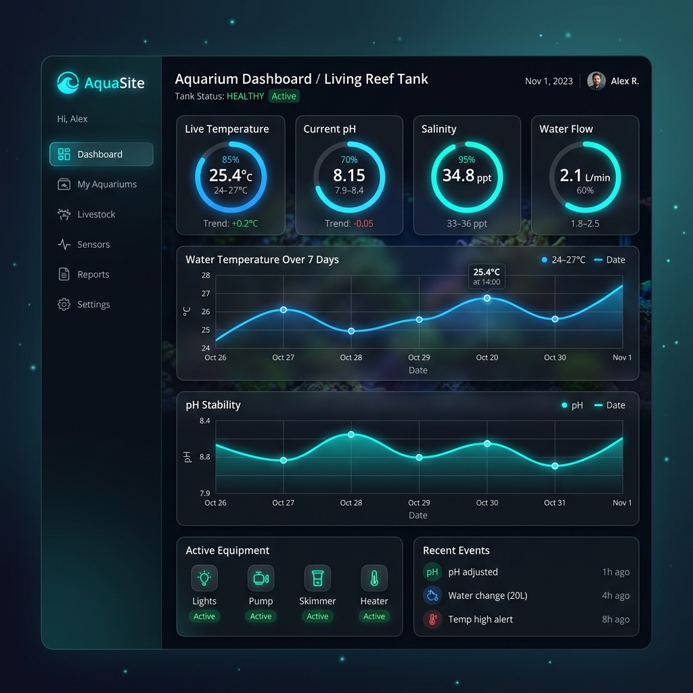

AquaSite • Symfony & Chart.js
💻 Projet MMI • Développement Web & Visualisation de Données
Description du Projet
Ce projet est une application web dynamique complète développée avec le framework PHP Symfony. Elle vise à offrir un tableau de bord d'analyse interactif, structurant et affichant des données de capteurs d'aquariums complexes à l'aide de représentations graphiques animées.
L'architecture s'appuie sur le modèle MVC de Symfony. Les contrôleurs gèrent la logique métier et l'accès à la base de données via Doctrine ORM. L'interface utilisateur est quant à elle entièrement intégrée avec le moteur de template Twig, utilisant notamment des appels dynamiques pour des interactions fluides sans rechargement de page.
Visualisation Statistique & REST API
La pièce maîtresse de l'application est son module de visualisation. Un contrôleur d'API dédié (ApiAquariumController) expose les mesures (température, pH, dureté de l'eau, nitrates, etc.) au format JSON. J'ai utilisé la bibliothèque Javascript Chart.js pour générer des diagrammes interactifs alimentés dynamiquement par ces requêtes AJAX.
Sécurité & Authentification par Binômes
L'application embarque un système complet d'authentification et d'autorisation des utilisateurs. Les comptes élèves sont regroupés par binômes pour simplifier la collaboration lors des relevés physiques d'aquariums. Les accès sont sécurisés : les élèves peuvent créer et modifier leurs relevés, tandis que les enseignants bénéficient d'un rôle privilégié pour administrer les comptes et valider les mesures.
Voir le projet sur GitHubLe code source est entièrement open-source et prêt à être déployé sur votre serveur de production ou hébergeur PHP tel qu'Alwaysdata.